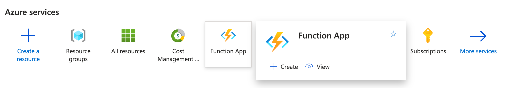
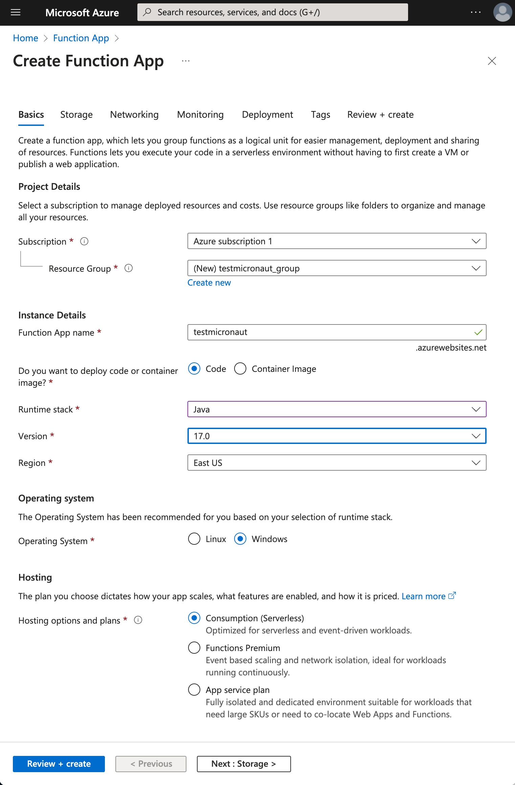
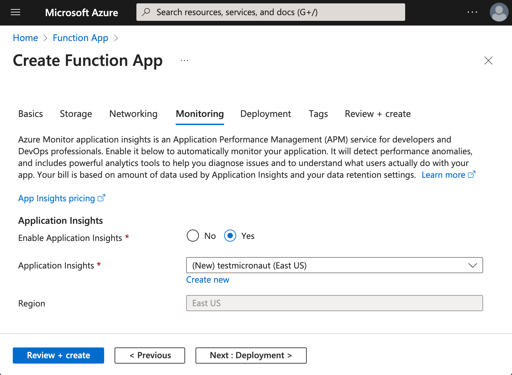
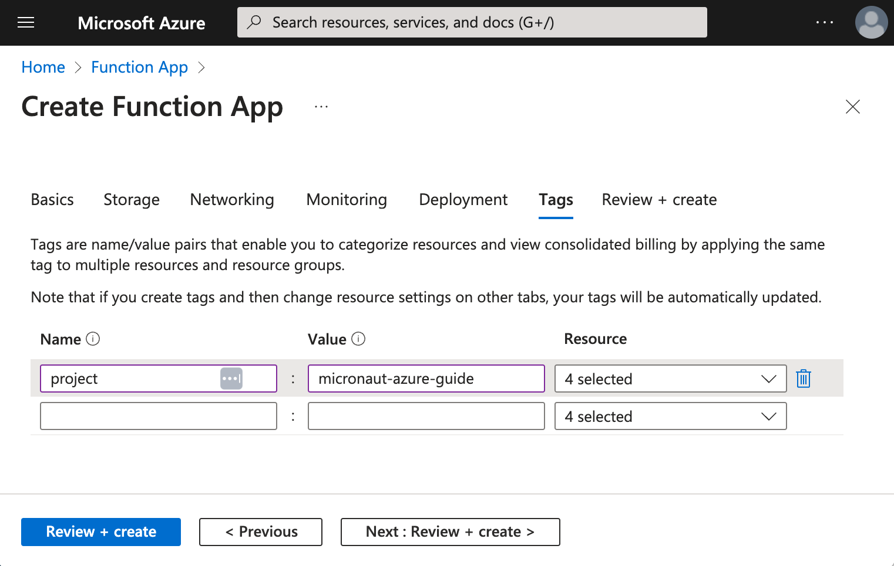
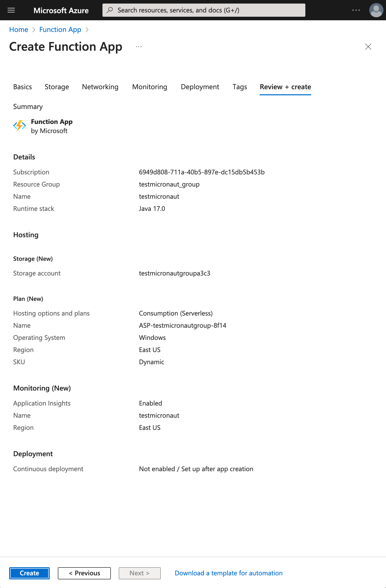

mn create-app example.micronaut.micronautguide \
--features=azure-function \
--build=maven \
--lang=kotlin \
--test=junitTable of Contents
- 1. Getting Started
- 2. What you will need
- 3. Solution
- 4. Writing the Application
- 5. Azure CLI
- 6. Azure Functions Core Tools
- 7. Function
- 8. Controller
- 9. Tests
- 10. Testing the Application
- 11. Running the Application
- 12. Create Azure Function App
- 13. Deploy Azure Function App
- 14. Next steps
- 15. Help with the Micronaut Framework
- 16. License
Micronaut Azure HTTP Functions
Learn how to create an Azure HTTP Function with the Micronaut framework
Authors: Sergio del Amo
Micronaut Version: 4.6.3
1. Getting Started
In this guide, we will create a Micronaut application written in Kotlin.
2. What you will need
To complete this guide, you will need the following:
-
Some time on your hands
-
A decent text editor or IDE (e.g. IntelliJ IDEA)
-
JDK 17 or greater installed with
JAVA_HOMEconfigured appropriately
3. Solution
We recommend that you follow the instructions in the next sections and create the application step by step. However, you can go right to the completed example.
-
Download and unzip the source
4. Writing the Application
Create an application using the Micronaut Command Line Interface or with Micronaut Launch.
If you don’t specify the --build argument, Gradle with the Kotlin DSL is used as the build tool. If you don’t specify the --lang argument, Java is used as the language.If you don’t specify the --test argument, JUnit is used for Java and Kotlin, and Spock is used for Groovy.
|
The previous command creates a Micronaut application with the default package example.micronaut in a directory named micronautguide.
If you use Micronaut Launch, select Micronaut Application as application type and add azure-function features.
| If you have an existing Micronaut application and want to add the functionality described here, you can view the dependency and configuration changes from the specified features, and apply those changes to your application. |
5. Azure CLI
Install Azure CLI
Azure CLI is a set of commands used to create and manage Azure resources. The Azure CLI is available across Azure services and is designed to get you working quickly with Azure, with an emphasis on automation.
6. Azure Functions Core Tools
Install the Azure Functions Core Tools
Azure Function Core Tools includes a version of the same runtime that powers Azure Functions runtime that you can run on your local development computer. It also provides commands to create functions, connect to Azure, and deploy function projects.
7. Function
The created application contains class which extends AzureHttpFunction
src/main/kotlin/example/micronaut/Function.kt
package example.micronaut
import com.microsoft.azure.functions.*
import com.microsoft.azure.functions.annotation.*
import io.micronaut.azure.function.http.AzureHttpFunction
import java.util.*
class Function : AzureHttpFunction() {
@FunctionName("ExampleTrigger")
fun invoke(
@HttpTrigger(name = "req",
methods = [HttpMethod.GET, HttpMethod.POST],
route = "{*route}",
authLevel = AuthorizationLevel.ANONYMOUS)
request: HttpRequestMessage<Optional<String>>,
context: ExecutionContext): HttpResponseMessage {
return super.route(request, context)
}
}When you write a Micronaut Azure HTTP function, you will write your application as you will normally do when developing outside of Azure functions. That it is to say, you will create routes with classes annotated with @Controller. The above class bridges both worlds. It adapts from an Azure to a Micronaut HTTP Request, and based on the route, it delegates to the appropriate Micronaut controller.
8. Controller
The generated application contains a Controller which exposes two routes (GET and POST):
src/main/kotlin/example/micronaut/DefaultController.kt
package example.micronaut
import io.micronaut.http.annotation.Controller
import io.micronaut.http.annotation.Get
import io.micronaut.http.annotation.Post
import io.micronaut.http.annotation.Body
import io.micronaut.http.annotation.Produces
import io.micronaut.http.MediaType
import io.micronaut.serde.annotation.Serdeable
@Controller("/default")
class DefaultController {
@Produces(MediaType.TEXT_PLAIN)
@Get
fun index(): String {
return "Example Response"
}
@Post
fun post(@Body inputMessage: SampleInputMessage): SampleReturnMessage {
return SampleReturnMessage("Hello ${inputMessage.name}, thank you for sending the message")
}
}
@Serdeable
data class SampleInputMessage(val name: String)
@Serdeable
data class SampleReturnMessage(val returnMessage: String)| 1 | The class is defined as a controller with the @Controller annotation mapped to the path /default. |
| 2 | The @Get annotation maps the index method to an HTTP GET request on /default. |
| 3 | By default, a Micronaut response uses application/json as Content-Type. We are returning a String, not a JSON object, so we set it to text/plain with the @Produces annotation. |
| 4 | The @Post annotation maps the postMethod method to an HTTP POST request on /default. |
| 5 | Annotate the class with @Introspected to generate BeanIntrospection metadata at compilation time. This information can be used, for example, to render the POJO as JSON using Jackson without using reflection. |
9. Tests
The generated application contains a test which shows how to write a Micronaut Azure HTTP Function tests.
src/test/kotlin/example/micronaut/DefaultFunctionTest.kt
package example.micronaut;
import com.microsoft.azure.functions.HttpStatus
import io.micronaut.http.HttpMethod
import org.junit.jupiter.api.Test
import org.junit.jupiter.api.Assertions
class DefaultFunctionTest {
@Test
fun testFunction() {
Function().use { function ->
val response = function.request(HttpMethod.GET, "/default")
.invoke()
Assertions.assertEquals(HttpStatus.OK, response.status)
}
}
}-
Instantiating the function starts the Micronaut application context.
10. Testing the Application
To run the tests:
./mvnw test11. Running the Application
To run the application use the ./mvnw package azure-functions:run command which will start the application on port 8080.
You can invoke the GET route:
curl -i localhost:7071/api/defaultHTTP/1.1 200 OK
Date: Sat, 08 May 2021 03:55:11 GMT
Content-Type: text/plain
Server: Kestrel
Transfer-Encoding: chunked
Example Responseor the POST route:
curl -i -d '{"name":"John Snow"}' -H "Content-Type: application/json" -X POST http://localhost:7071/defaultHTTP/1.1 200 OK
Date: Sat, 08 May 2021 03:57:56 GMT
Content-Type: application/json
Server: Kestrel
Transfer-Encoding: chunked
{"returnMessage":"Hello John Snow, thank you for sending the message"}12. Create Azure Function App
Create a Function App in the Microsoft Azure Portal. If you prefer, use the Azure CLI.

12.1. Basics | Create Function App
Select:
-
Runtime stack: Java
-
Version: 17
-
East US
-
Operating System: Windows
-
Plan type: Consumption

12.2. Monitoring | Create Function App
Enable Application Insights.

12.3. Tags | Create Function App

12.4. Review & Create | Create Function App

13. Deploy Azure Function App
Login to azure portal in your terminal.
az loginRun ./mvnw package azure-functions:deploy to deploy your Azure Function App.
If you visit https://testmicronaut.azurewebsites.net/ you will get an HTML page informing you that the function is up and running.
You can invoke the GET route:
curl -i https://testmicronaut.azurewebsites.net/defaultHTTP/1.1 200 OK
...
..
.
Example Response14. Next steps
Read more about:
15. Help with the Micronaut Framework
The Micronaut Foundation sponsored the creation of this Guide. A variety of consulting and support services are available.
16. License
| All guides are released with an Apache license 2.0 license for the code and a Creative Commons Attribution 4.0 license for the writing and media (images…). |